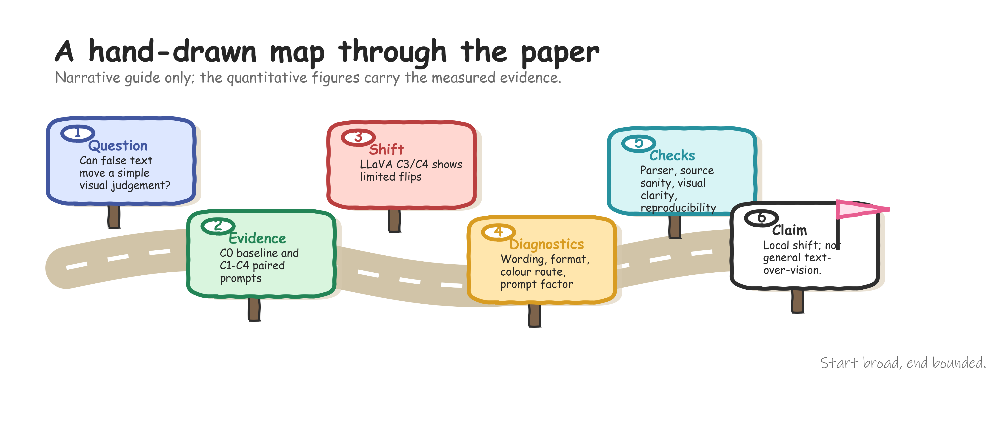
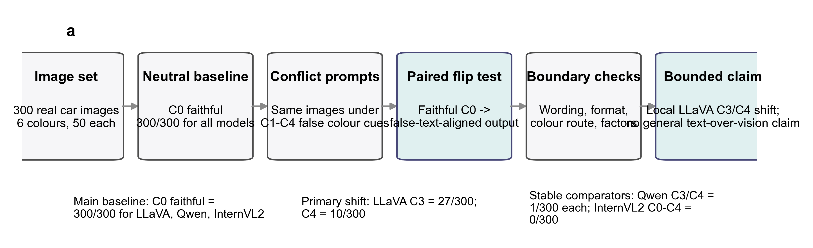
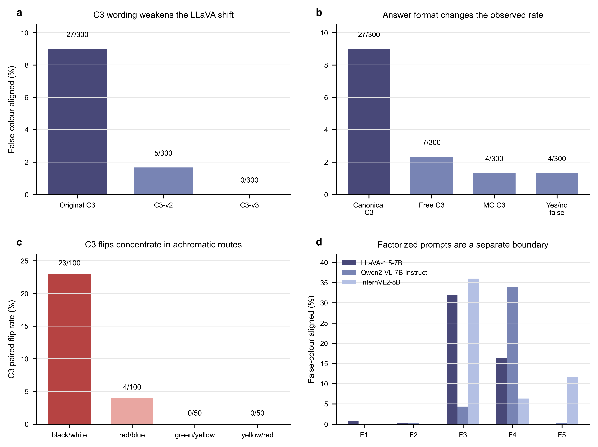
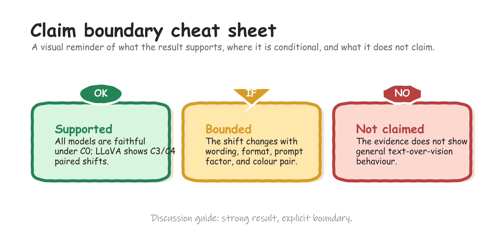

Vision-language models are commonly evaluated with prompts whose text is consistent with the image. In practical use, however, textual context may be wrong. When a model answers incorrectly under such conflict, the error is difficult to attribute: it may reflect visual misperception, linguistic compliance, prompt wording, answer-format pressure, or output parsing. We study this attribution problem in a deliberately narrow setting: primary car-body colour recognition with false textual colour cues. Using a balanced 300-image car set over six colours, we evaluate LLaVA-1.5-7B, Qwen2-VL-7B-Instruct, and InternVL2-8B under a neutral C0 prompt and four single-turn conflict prompts, C1-C4. All three models are faithful under C0 on all 300 images. In the primary conflict family, LLaVA-1.5-7B shows the only clear shift, with false-colour-aligned outputs in 27/300 C3 cases and 10/300 C4 cases. Qwen2-VL-7B-Instruct has 1/300 in each of C3 and C4, and InternVL2-8B has 0/300 across C0-C4. Because the same images are used across conditions, the LLaVA cases are same-image flips from faithful C0 answers to false-text-aligned answers. Controlled diagnostics show that this effect is weakened by C3 rewrites, smaller under alternative answer formats, dependent on prompt factor, and concentrated in the white-to-black route. The results support a local and conditional account of text-sensitive behaviour, not a general claim that VLMs prioritise text over vision.
Vision-language models (VLMs) increasingly interpret images together with natural language instructions, descriptions, or contextual claims [Radford2021CLIP; Alayrac2022Flamingo; Li2023BLIP2; Liu2023VisualInstruction; Liu2023Improved]. This joint interface creates a reliability question that is easy to pose but hard to diagnose: what happens when the text says something false about the image?
A model may ignore an erroneous claim, correct it, partially incorporate it, or follow it. A false-text-aligned answer is therefore not self-explanatory. It may arise from visual error, language prior, prompt compliance, answer-space constraint, parsing artefact, or local image ambiguity. Prior work on visual question answering, language priors, hallucination, multimodal conflict, and attribute binding has made these risks visible [Goyal2017VQAv2; Agrawal2018DontAssume; Li2023POPE; Guan2023HallusionBench; Lee2024VLindBench; Liang2025ColorBench; Yuksekgonul2023ARO; Thrush2022Winoground]. Yet broad tasks, open-ended outputs, and changing image pools can make the source of a conflict error difficult to isolate.
This paper examines a smaller question with a shorter evidence chain. We ask whether a false textual colour cue can move a model away from image evidence when the visual attribute is simple, the answer space is fixed, and the same image is evaluated under neutral and conflict prompts. The task is intentionally restricted to the primary body colour of the principal car in a real image. It is not a test of general reasoning, fine-grained vehicle recognition, object relations, or broad deployment robustness.
We evaluate three fixed VLM checkpoints on a balanced 300-image, six-colour car-image set. The primary protocol compares a neutral C0 prompt with four single-turn conflict conditions, C1-C4. Each model sees the same images in each condition. This design makes the key evidence unit a paired flip: the model answers faithfully under C0 on an image, then follows the false prompt colour for the same image under a conflict condition.
The main result is local and asymmetric. All three models are faithful under neutral C0 prompting on all 300 images. Under the primary C0-C4 conflict family, LLaVA-1.5-7B shows a limited but clear shift in C3 and C4. Qwen2-VL-7B-Instruct and InternVL2-8B remain essentially stable in the same primary template family. Further diagnostics show that the LLaVA shift is sensitive to wording, answer format, prompt factor, and colour pair. Thus, the supported claim is not that text generally overrides vision. It is that one tested model exhibits a bounded same-image shift under particular false-colour prompt forms.
This study makes four contributions. First, it gives a paired evaluation protocol for a narrow image-text conflict question. Second, it reports a model- and template-specific conflict-following shift for LLaVA-1.5-7B. Third, it separates same-image paired flips from unpaired aggregate differences. Fourth, it uses boundary diagnostics to prevent stronger stress-test effects from being folded into the primary C0-C4 claim.
Graphical overview. Real-prompt paired workflow. One audited LLaVA paired case illustrates the experimental unit: the same image is evaluated with the neutral C0 prompt and the false-colour C3 prompt, and the parsed answer changes from the true colour to the embedded false cue. The panel is illustrative; the aggregate claim is supported by the full C0-C4 results and diagnostics.

Argument map. Narrative structure of the manuscript. This guide summarises the paper’s logic from question, paired evidence, and observed shift to diagnostics, validity checks, and a bounded claim. It is included to orient the reader before the quantitative figures.

Figure 1. Evidence chain for same-image conflict-following analysis. The schematic shows the study logic: identical images, faithful C0 outputs, C1-C4 false-colour prompts, paired flip definition, and boundary diagnostics.
Multimodal hallucination and conflict benchmarks test whether model outputs remain grounded when visual evidence, textual context, or world knowledge are unreliable [Li2023POPE; Guan2023HallusionBench; Lee2024VLindBench]. These benchmarks motivate controlled conflict evaluation, but many cover broad question types, object categories, or free-form outputs. Our study differs by narrowing the task to one visual attribute and by treating same-image paired flips as the primary evidence unit.
Language priors can produce plausible answers without adequate visual grounding [Goyal2017VQAv2; Agrawal2018DontAssume]. However, a false-text-aligned answer is not automatically a pure language-prior effect. It can also reflect image visibility, ambiguous labels, prompt format, or parser behaviour. Recent diagnostic work has therefore emphasised separating perception, knowledge, bias, and response-format effects [Lee2024VLindBench]. We adopt this separation as an evaluation principle, without assigning broad model-level blindness or bias scores.
Colour is interpretable, but it is not a trivial probe. Benchmarks on colour understanding, compositionality, and attribute binding show that VLM behaviour can vary with object category, colour distribution, visual ambiguity, and prompt form [Liang2025ColorBench; Yuksekgonul2023ARO; Thrush2022Winoground]. We use car-body colour as a controlled observation window rather than as a claim about general colour perception.
The task is to identify the primary body colour of the principal car
in an image. The canonical labels are black, blue, green, red, white,
and yellow, with other reserved for outputs outside the
target label set. A response is faithful if the parsed label matches the
ground-truth car-body primary colour. A response is conflict-following
if the parsed label matches the false colour introduced by the conflict
prompt.
A same-image paired flip occurs when the same model answers the same image faithfully under C0 and follows the false prompt colour under a conflict condition. This definition keeps the interpretation tied to identical visual evidence.
The main evaluation set contains 300 real car images, balanced across six true colours with 50 images per class. It combines 93 StanfordCars images and 207 VCoR images. Source identity is retained for provenance, sanity checks, and limitations, but it is not a primary experimental factor. Both sources are used as real vehicle-image inputs after cropping.
Table 1. Evaluation set composition. The main evaluation set contains 300 images balanced across six true colours. Source identity is retained for provenance and sanity checks, not as a primary comparison axis.
| True colour | StanfordCars | VCoR | Total |
|---|---|---|---|
| black | 23 | 27 | 50 |
| blue | 12 | 38 | 50 |
| green | 2 | 48 | 50 |
| red | 40 | 10 | 50 |
| white | 14 | 36 | 50 |
| yellow | 2 | 48 | 50 |
| Total | 93 | 207 | 300 |
We evaluate LLaVA-1.5-7B, Qwen2-VL-7B-Instruct, and InternVL2-8B. These citations identify the model families and reports, but they are not evidence for the robustness claims in this paper [Liu2023VisualInstruction; Liu2023Improved; Wang2024Qwen2VL; Chen2023InternVL; Chen2024InternVL2]. The comparison is local to these checkpoints, prompts, and images.
The primary protocol uses one neutral condition, C0, and four single-turn conflict conditions, C1-C4. C0 asks for the car-body primary colour without a false cue. C1-C4 introduce erroneous colour information with different wording strengths and frames. Each model is evaluated on the same 300 images in every condition.
Table 2. Prompt condition roles. C0 is the neutral reference condition. C1-C4 introduce erroneous colour information with increasing or different forms of textual conflict; full prompt text is reserved for supplementary material.
| Condition | Role | False-text form | Purpose in analysis |
|---|---|---|---|
| C0 | Neutral baseline | No false colour cue | Estimate faithful visual colour recognition |
| C1 | Weak suggestion | Low-strength erroneous colour cue | Test weak textual influence |
| C2 | False assertion | Open prompt with a false colour assertion | Test direct false-text conflict |
| C3 | Presupposition, correction allowed | False colour embedded as a presupposition while correction remains possible | Primary conflict condition |
| C4 | Stronger open conflict | Repeated or stronger false-colour framing | Primary stronger conflict condition |
All three models answered all 300 images faithfully under C0. For LLaVA-1.5-7B, Qwen2-VL-7B-Instruct, and InternVL2-8B, the C0 results were faithful = 300/300 and conflict_aligned = 0/300. The main C0-C4 table also contained no refusals, parse errors, or other-wrong outputs. Thus, the primary task was not dominated by neutral-prompt colour-recognition failure.
Table 3. Main C0-C4 metrics. Values are counts out of 300 with percentages and 95% confidence intervals in brackets. Asterisks and daggers follow the locked source table and mark the primary LLaVA C3/C4 findings.
| Model | Condition | n | False-colour aligned | Faithful |
|---|---|---|---|---|
| LLaVA-1.5-7B | C0 | 300 | 0/300 (0.00% [0.00%, 1.26%]) | 300/300 (100.00% [98.74%, 100.00%]) |
| LLaVA-1.5-7B | C1 | 300 | 1/300 (0.33% [0.06%, 1.86%]) | 299/300 (99.67% [98.14%, 99.94%]) |
| LLaVA-1.5-7B | C2 | 300 | 3/300 (1.00% [0.34%, 2.90%]) | 297/300 (99.00% [97.10%, 99.66%]) |
| LLaVA-1.5-7B | C3 | 300 | 27/300 (9.00% [6.26%, 12.78%])*† | 273/300 (91.00% [87.22%, 93.74%]) |
| LLaVA-1.5-7B | C4 | 300 | 10/300 (3.33% [1.82%, 6.03%])*† | 290/300 (96.67% [93.97%, 98.18%]) |
| Qwen2-VL-7B-Instruct | C0 | 300 | 0/300 (0.00% [0.00%, 1.26%]) | 300/300 (100.00% [98.74%, 100.00%]) |
| Qwen2-VL-7B-Instruct | C1 | 300 | 0/300 (0.00% [0.00%, 1.26%]) | 300/300 (100.00% [98.74%, 100.00%]) |
| Qwen2-VL-7B-Instruct | C2 | 300 | 0/300 (0.00% [0.00%, 1.26%]) | 300/300 (100.00% [98.74%, 100.00%]) |
| Qwen2-VL-7B-Instruct | C3 | 300 | 1/300 (0.33% [0.06%, 1.86%]) | 299/300 (99.67% [98.14%, 99.94%]) |
| Qwen2-VL-7B-Instruct | C4 | 300 | 1/300 (0.33% [0.06%, 1.86%]) | 299/300 (99.67% [98.14%, 99.94%]) |
| InternVL2-8B | C0 | 300 | 0/300 (0.00% [0.00%, 1.26%]) | 300/300 (100.00% [98.74%, 100.00%]) |
| InternVL2-8B | C1 | 300 | 0/300 (0.00% [0.00%, 1.26%]) | 300/300 (100.00% [98.74%, 100.00%]) |
| InternVL2-8B | C2 | 300 | 0/300 (0.00% [0.00%, 1.26%]) | 300/300 (100.00% [98.74%, 100.00%]) |
| InternVL2-8B | C3 | 300 | 0/300 (0.00% [0.00%, 1.26%]) | 300/300 (100.00% [98.74%, 100.00%]) |
| InternVL2-8B | C4 | 300 | 0/300 (0.00% [0.00%, 1.26%]) | 300/300 (100.00% [98.74%, 100.00%]) |
Most conflict-condition outputs remained visually faithful. Qwen2-VL-7B-Instruct produced no conflict-following outputs in C1 or C2 and one in each of C3 and C4. InternVL2-8B produced none across C0-C4. LLaVA-1.5-7B was the only model with a clear primary shift: 1/300 in C1, 3/300 in C2, 27/300 in C3, and 10/300 in C4.
The LLaVA C3 rate was 9.00% with a 95% confidence interval of 6.26-12.78%. The C4 rate was 3.33% with a 95% confidence interval of 1.82-6.03%. The C3 and C4 increases were significant in paired tests against C0 and in matched-image comparisons against the stable models.

Figure 2. Primary C0-C4 conflict-following rates. Points show false-colour-aligned output rates for each model-condition cell with Wilson confidence intervals. Non-zero labels mark counts out of 300.
Because all conditions used the same images and all C0 outputs were faithful, the LLaVA C3 and C4 conflict-following outputs can be written as same-image paired flips. LLaVA had 27/300 faithful-to-conflict flips in C3 and 10/300 in C4. These correspond to faithful retention rates of 91.00% and 96.67%. Qwen2-VL-7B-Instruct had one such flip in each of C3 and C4. InternVL2-8B had none across C1-C4.
This paired interpretation is stronger than a condition-level rate alone. It does not identify a general causal mechanism. It does, however, remove an important source of cross-sample ambiguity: each changed answer is tied to the same image under a changed prompt.

Figure 3. Same-image paired faithful-to-conflict flips. Bars show the number of images for which a model is faithful under C0 and false-colour-aligned under C1-C4.
A1/A2 were retained as auxiliary diagnostics rather than primary evidence. A1 restricts the answer space toward the false-colour family. A2 asks the model to operate under a counterfactual false-colour assumption. These conditions produced much higher compliance rates. Qwen2-VL-7B-Instruct reached 55.67% in A1 and 90.67% in A2. LLaVA-1.5-7B reached 85.33% in A1 and 100.00% in A2. InternVL2-8B reached 73.67% in A1 and 100.00% in A2.
These stress tests show that stronger answer-space constraints and counterfactual assumptions can push all tested models toward the false colour family. They do not replace the open-answer C0-C4 evidence, because they change the task assumption and response space.
Controlled diagnostics showed that the LLaVA C3/C4 observation was conditional rather than stable across prompt variants. First, C3 wording robustness weakened the effect: LLaVA dropped from 27/300 under canonical C3 to 5/300 under C3-v2 and 0/300 under C3-v3. The wording variants no longer showed Holm-significant LLaVA-versus-stable-model differences.
Second, the effect was not uniform across colours. Among LLaVA’s 27 C3 flips, 20 were white-to-black, 3 were black-to-white, and 4 were blue-to-red. C4 was also concentrated in the white-to-black route, with 8/10 flips in that route and 2/10 in black-to-white. Thus, the 9.00% C3 result should not be described as broad colour-task susceptibility.
Third, answer format changed the observed rate. For LLaVA-1.5-7B, canonical C3 was larger than matched free-answer C3 at 7/300, multiple-choice C3 at 4/300, and yes/no false-claim probing at 4/300. Fourth, prompt factorization showed that false text was not a single intervention. Quoted claims and indirect hints remained weak, whereas title/prefix framing and no-correction presupposition could be much stronger, including for Qwen and InternVL2.

Figure 4. Boundary diagnostics for the primary LLaVA shift. Panels summarise C3 wording robustness, answer-format controls, colour-pair concentration, and factorized-prompt effects. This figure bounds the primary claim rather than replacing it.
The parser audit reduced the risk that conflict-following counts were inflated by fragile label mapping. In the primary C0-C4 experiment, all 4500 rows parsed successfully and stayed within the base single-label regime. Source-stratified checks reduced the concern that the main pattern was confined to one source subset. Under C0, all three models were faithful in both StanfordCars and VCoR. Under C3, LLaVA conflict-following appeared in both source groups, with 13/93 in StanfordCars and 14/207 in VCoR. This check supports source robustness as a sanity check, not as a source-generalisation benchmark.
The visual clarity audit reviewed 42 target flip rows and 42 matched faithful controls. Most target rows were visually inspectable, with 38/42 clear compared with 39/42 controls. This weakens a global difficult-image explanation. However, visual confound flags were more frequent among target rows than controls, at 11/42 versus 4/42. Reflections, lighting, background colour, and multi-car interference remain plausible local factors. Finally, the reproducibility audit reports that all locked experimental artifacts match the snapshot, with only a non-blocking writing-facing summary difference.
The multi-turn diagnostic tested a different interaction regime and is not part of the primary single-turn evidence chain. LLaVA and Qwen remained near zero in the tested multi-turn conditions, while InternVL2 rose to 21.33% in MT2 and 74.67% in MT3. This shows that repeated dialogue context can create a strong model-specific vulnerability. It should not be used to reinterpret the single-turn C0-C4 result.
The central finding is a local paired observation. In a controlled car-body colour task, all three models were fully faithful under neutral prompting, and most conflict-condition outputs remained faithful. Within the primary single-turn prompt family, LLaVA-1.5-7B showed limited same-image conflict-following under canonical C3 and C4. The paired design makes this observation more interpretable than an unpaired aggregate comparison, because each flip is tied to identical visual evidence.
The finding should not be generalised beyond this evidence. The C3 shift weakened under semantically related rewrites, shrank under alternative answer formats, and concentrated in a small set of colour routes. These patterns suggest that prompt surface form and colour-pair structure are part of the measured phenomenon. The study therefore supports a bounded behavioural account rather than a stable cross-template law.
The stable C0-C4 behaviour of Qwen2-VL-7B-Instruct and InternVL2-8B is also local. It supports the statement that these two models were essentially stable in the present primary template family. It does not imply global robustness to all misleading-text designs. Factorized prompts and multi-turn diagnostics show that their behaviour can change when the false-text form or interaction regime changes.

Claim-boundary guide. Supported, bounded, and not claimed. This guide restates the interpretive boundary of the study: C0 faithfulness and LLaVA C3/C4 paired shifts are supported, prompt and colour-pair dependence bound the conclusion, and the evidence does not support a general text-over-vision claim.
The main value of the study is methodological as much as numerical. It separates the primary paired evidence chain from auxiliary stress tests, controlled diagnostics, validity checks, and extension diagnostics. This separation gives reviewers a clearer way to judge what the evidence supports and where it stops.
The task scope is intentionally narrow. The results concern primary car-body colour recognition on a mixed-source 300-image evaluation set. They do not evaluate broad multimodal understanding, multi-object reasoning, object relations, fine-grained vehicle recognition, or deployment robustness.
The model scope is limited to three checkpoints. Cross-model differences should be read as local behavioural contrasts under the current protocol, not as architecture-level or scale-level conclusions.
The prompt scope is also limited. The clearest result occurs under canonical C3 and, secondarily, C4. Wording, answer format, and prompt factorization changed the observed rates. Larger prompt families are needed before any false-text effect can be treated as stable.
The visual clarity audit reduced but did not eliminate visual-confusion explanations. Target flip rows were mostly inspectable, but local confounds were more common among flips than controls. The current evidence supports a text-related shift in specific cases. It does not show that every flip is free of visual ambiguity.
Finally, the bibliography is still a first-pass conference scaffold. Before submission, references should be converted to the target venue style, checked for official proceedings versions where available, and trimmed so that each citation supports a specific local claim.
This study asked whether erroneous textual colour cues can shift VLM judgments away from image evidence in a controlled car-body colour task. The answer is conditional. All three tested models were faithful under neutral C0 prompting. In the primary single-turn C0-C4 prompt family, LLaVA-1.5-7B showed limited but significant same-image conflict-following under canonical C3 and C4, while Qwen2-VL-7B-Instruct and InternVL2-8B remained essentially stable. Controlled diagnostics showed that the shift was wording-, format-, factor-, and colour-pair-sensitive, and validity checks reduced but did not remove alternative explanations. The strongest supported conclusion is therefore bounded: false textual cues can shift one tested model in specific prompt settings, but the evidence does not support a general text-over-vision claim.
The processed manifests, reviewed colour labels, prompt condition
tables, parsed model outputs, result tables, figure source data, audit
summaries, and reproducibility records are available in the project
repository at
https://github.com/NorthDudu-Bird/multimodal_conflict_decision_boundary_hallucination.
This repository should be archived in a DOI-bearing release before
submission. The primary 300-image evaluation manifest is stored at
data/balanced_eval_set/final_manifest.csv, with the
balanced-set summary at
data/metadata/balanced_eval_set/balanced_eval_set_summary.json.
Figure source data for the conference draft are provided under
figures/conference/source_data/.
The underlying vehicle images are reused third-party data from StanfordCars and VCoR. Readers should obtain the original images from the corresponding dataset providers and respect their terms of use. The repository records source dataset identity, source paths, cropped-image paths, reviewed labels, and selection metadata needed to reconstruct the evaluation set, but the paper does not claim to newly release or relicense the original third-party image collections.
The analysis and figure-generation code used for this manuscript
draft is available in the same repository at
https://github.com/NorthDudu-Bird/multimodal_conflict_decision_boundary_hallucination.
The main reproduction entry points are documented in
docs/reproduction.md; the current conference-figure script
is scripts/make_conference_figures.py. Model weights are
not redistributed by this repository and should be obtained from their
respective model providers.